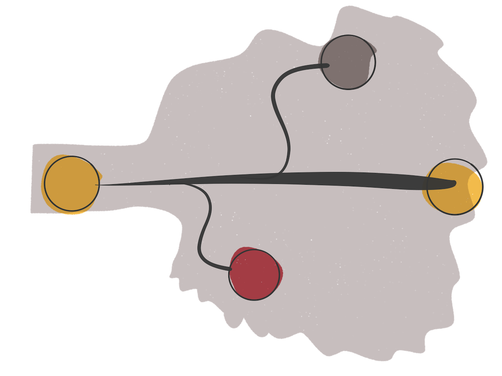

The Git guide I wish I had

Back when I started working for the web I was working in a team of 3. All of us at some point would need to edit the same files. And in some rare occasions, more than 1 person on the same file.
All our files where in a central place, a server, for what is worth. We did have a local copy on our computers. But it was being automatically synced with the server as soon as a file was changed — like Dropbox.
See the problem?
We would easily run into each other when doing these kind of changes. So our safety system, which appeared organically since we were all on the same office, was verbally checking if anyone was editing that file at that time. First come, first served.
It was also common to ask the person editing the file we were about to edit to do a small edit for us to prevent messing with their work in progress. This brings a few more issues, but I’m not going to touch on those.
What’s Git and why it’s useful
Git is a version control software. In other words, Git allows teams of any size to collaborate on the same codebase through different versions of that codebase and a process of merging them back together.
Git comes installed in Linux and macOS, so you can start using it right away. The same can’t be said about Windows, which requires a manual installation.
So how does it work?
Each developer has a local copy of the codebase on their computer.
The server has another one — your source of truth. All developers connect to the server to either pull the latest updates or push their work.
It solves the problem of having to check if someone is editing a specific file before you add your own updates. Worst case scenario one of your teammates will have to solve a conflict on that file. But that’s not always the case.
When I started I didn’t know better. I didn’t even knew Git existed. But when I did, it didn’t feel like a very straight forward tool to learn.
Now that I’ve been using it for a few years and it feels more familiar, although I’m certain there’s still plenty to learn, I wanted to share the commands I use more often. A guide that I would have liked to read back when I started using Git.
Do you need to use CLI to use Git?
There are plenty of Git visual applications you can use to bypass a command line interface altogether. I started that way, actually.
I installed one of the most basic applications I could find in hope this whole learning process would be easier for me.
The issue with that approach is that, naturally, the most basic of the applications won’t have all the features you might need. So what I ended up facing more and more often was situations where I would need to perform an action that the application didn’t implement.
Perhaps that was a sign I was starting to dip into not-so-basic scenarios.
So I started using the CLI for those cases. I would search online how to do what I needed with Git, and try it out.
At some point I thought: Why am I using an application to do the basic stuff and then do the more advanced stuff through CLI?
I mean, how hard would it be to do everything from CLI? I gave it a try. And never looked back.
There’s one thing I believe visual applications do better than the CLI: graphs. Naturally, a more visual feature works better in a visual application than a command line. But I rarely need it. Even with CLI, I rarely need it, hence why it’s missing from this guide.
Getting started
There are 2 ways you can start using Git in a project. You either initialize Git on a local folder or you download/clone an already existing project.
Tip: Projects that use Git are often referred to as “repositories”, or “repos” for short.
Init
When you already have a local non-versioned project and just wish to start versioning it with Git, you can do that by running:
git initThis will create a .git subdirectory under the directory the init command was ran. The .git directory is where all the Git magic will happen. Don’t worry about it.
Clone
When you wish to collaborate on an already existing project, be it an open source project or a private project, you can download/clone it to your local computer by running:
git clone <repo-url>For instance, for Microsoft’s Visual Studio Code you would do:
git clone https://github.com/microsoft/vscode.gitManaging remote
Whenever you hear about “remote” in the context of Git repositories, it refers to the central codebase. Your source of truth.
When you clone an existing repo, you can check where the repo comes from and where Git will push your changes to, by running:
git remote -vThe output should be a list of fetch and push URLs, usually just 2, labelled as origin.
But when you initialize Git in a local folder, it doesn’t have any information where it should push your changes. What you need to do is run:
git remote add origin <url>For instance:
git remote add origin https://github.com/microsoft/vscode.gitThis is useful when you create a new repository in GitHub for instance, to hold a project you already have in your computer. You link them together with this command.
Checking the current state
After changing some files locally on your computer, you might need to check what changes you’re about to introduce to the repo.
You can get a list of the files you touched by running:
git statusThe output can be split in 3 different sections:
- Staged changes — Files that will be used for commit
- Unstaged changes — Files that will not be used for the next commit
- Untracked files — Files that are new to the repo
Ask Git to ignore some files
By default Git attempts to track every single file inside a repo. But sometimes that’s not what you want. Let’s say you have a server-credentials.json file in your project that you don’t want to track/upload to the remote repo for security reasons.
You can create a file named .gitignore on the root of your project and just type server-credentials.json on the first line.
You can also ignore all the files from a specific folder like: credentials/*
Or all the .txt files like: *.txt
The .gitignore file by itself is a file you might want to avoid ignoring, so you can keep all collaborators in sync on which files should be ignored.
Check what changed within a specific file
Sometimes you need more than a list of files that changed. You need to see exactly what’s changing inside a file. You can do that with:
git diff <file-path>This will get you in a read only environment from which you can get out of by pressing q.
You can also see what’s changing on every file with:
git diffAnother use case for this command is using the --staged flag, like:
git diff --stagedWhich will list all the changes happening, but only on the files that are on stage.
Checking the commit history
At some point during development you will need to check the history (or log) of the repository. You can do that with:
git logThe output is an extensive list containing a bunch of information about the commits, including author, date, commit hash and message, sorted with the most recent commit on top.
Again, press q to exit out of this mode.
A more digestible way of looking back in history is by including the --pretty=oneline flag. It’s like a compact version of the log command. It strips a lot of the information and leaves only the commit hash and the first line from message of each commit.
You can still argue that the commit hashes are not that digestible. They’re actually quite long. And to solve that I use the --abbrev-commit flag.
So this is how I usually check the log:
git log --pretty=oneline --abbrev-commitAdding files to stage
I have been mentioning “stage” here and there, but I still didn’t touch on how to actually add files to stage. And it’s very simple, actually.
To add a single file (or multiple) to stage you do:
git add <file-path-1> <file-path-2> <file-path-n>To add all the changed files to stage you do:
git add .My workflow usually consists of running git status to get a list of all the changed files, followed by either variation of the add command, depending on what I need.
How to pick one over the other
It’s probably a good time to mention when to use one over the other.
Think of it as steps. Just like you’re able to undo some changes in your computer, you might also need to revert a change in a Git repo.
Now, it would be a real pain if when writing a document you could only undo a big portion of the document, say chapters. Ideally, you would like to be able to undo smaller portions, like a small group of words.
This is why you should only add to stage (and therefore include in a commit) the files you really need for the specific change you’re introducing to work/make sense. For instance, if I’m adding a new page I might want to group in a single commit the CSS, the HTML and the JavaScript file required for that page to work properly. But I might not want to add a quick fix I did on another CSS file.
This way, there would be 2 commits:
- Adding a new page
- Fixing a CSS issue
At a later point, I might realize this CSS fix is actually introducing other issues that I want to avoid. By having these changes in separate commits I’m able to undo only one of them without compromising all the work of the new page.
Removing a file from stage
Sometimes it’s easier to add all the files to stage with git add . and then remove 1 file instead of adding every single file one by one with git add <file-path>.
But how do you remove a file that’s already been added to stage?
git reset <file-path>Just like you would do to add a file, but instead of the add command you use reset. You won’t be changing the contents of the file, you’re just telling Git you don’t want to include this file in your next commit.
Committing to your changes
So what do you do after adding all the necessary files to stage? You commit them. It’s like saying “These are really the changes I want to introduce — signed [you]”. It’s a commitment!
Right after doing git add (which you can do multiple times), you do:
git commitYou’ll notice that when you do this, the command line changes a bit and you seem to be stuck — rest assure, you’re not. The interface you’re now on is called Vim, and it’s a pain to work with for anyone who’s not used to it.
A few quick tips:
- Pressing
iputs you in “insert” mode - Pressing
Escexits out of your current mode - Entering
:qquits Vim without writing anything - Entering
:wqsaves the file and then quits Vim
The workflow would be something like:
git commit- Press
ito write your commit message - Press
Escwhen done - Enter
:wqto save your commit message and quit Vim
If you want to double check the commit went through you can run the log command.
But there’s an easier way
The best practices dictate that the first line of your commit message should be short, around 80 characters, give or take.
With this in mind, there’s a flag we can use to set our commit message while avoiding entering Vim altogether:
git commit -m "<your message>"For instance:
git commit -m "Add new contact page"But sometimes you will need to add more than just a single line. For those cases you can omit the quote at the end and still hit Enter, like:
git commit -m "Add new contact page<Enter>This will allow you to add more lines to your commit message.
Tip: Always leave one empty line right after the first line, for extra clarity.
When you’re done, just add a closing quote sign to your message and it should be good.
Forgot something on your latest commit?
On some occasions you will need to either fix a commit message or add some more changes to the latest commit. If you’re just tweaking the commit message you can do that with:
git commit --amendThis will get you into Vim again, but at this point you should know how to deal with it, basically:
- Press
ito enter “insert” mode - Navigate with the cursor keys to where you want to fix the message
- Do the actual changes to the commit message
- Press
Escto exit out of “insert” mode - Enter
:wqto save your new message and quit Vim
If you’re adding new file changes to the latest commit you should:
git add <all the files you need to add>git commit --amend- At this point if you don’t want to change the message just enter
:wqto save the commit, otherwise follow the steps above to add a new message
Undoing a commit
It doesn’t happen every day, but you’ll appreciate that time you (or your team) splitted the work in multiple commits so you can rely on revert.
It works like this:
git revert <commit-hash>This will create a new commit, reverting the changes introduced in that commit. And you can revert any commit in the commit history, not just the last one.
Where do you find the commit hash? You can either rely on the log command or check it in whatever service you’re using to host your repo, like GitHub.
Branches
So far, we have been touching on files and commits, but we’re missing an important part of Git: branches.
Just like a tree, a Git repo also has branches.
There’s a main branch, usually named master.
Recently though, GitHub has given their users the ability to rename branches, including master. So to avoid the “master” term, this branch can also be named main.
Then you can have a number of branches derived from the main one but not necessarily in the same state.
Unlike a tree, at some point, these derived branches connect back to the main branch through a processed called merging.
So what’s the point of having another branch?
Remember when I mentioned Git is a version control software? The different versions live in different branches.
Each branch will be a copy of the codebase in a different state.
It’s extremely useful when you need to implement a new feature or a fix, for instance. You go into the main branch, and create a new branch from it to hold your feature. In other words, your feature is going to be built on top of the most recent version of the codebase, but in a separate environment.
Listing branches
Before switching to another branch you should first check what branches already exist to avoid attempting to create a branch with the same name of an already existing one. How do you do that?
git branchJust like git diff, this will get you in a read only environment from which you can get out of by pressing q.
If you want to include all the remote branches as well, you do:
git branch -aAt some point, you have created so many branches that it’s getting hard to find the one you want from such a big list. A trick I usually rely on is combining the grep Unix command along with git branch. Basically, filter the results of git branch with a pattern, like this:
git branch | grep dropdownThis will list all the branches whose names include dropdown.
Creating a new branch
As soon as you start working in a team, you will need to create a branch of your own so you don’t step on each other’s toes while implementing a bunch of different features/fixes. You can do that with:
git branch <name-of-your-branch>For instance:
git branch feature/fancy-dropdownNotice that this won’t automatically switch you to the new branch. It just creates it. More on that on the checkout command.
Deleting a branch
To avoid the scenario mentioned above where the list of local branches is so big that you can barely find what you’re looking for, you can delete local branches that were already merged — basically, branches whose job is done. And this can be done with:
git branch -d <name-of-your-branch>For instance:
git branch -d feature/fancy-dropdownHave in mind that you won’t be able to delete a branch if you’re currently on it. Just like you wouldn’t want to cut through a tree branch while sitting on it. You do it by jumping on another branch (any other) and delete the one you don’t want anymore.
Checking other branches
So you created a new branch with git branch <name-of-your-branch>. And you noticed you are still on the same branch as you were.
How do you switch to another branch?
git checkout <name-of-your-branch>The checkout command has multiple uses though, depending on what you ask it to do.
Hang on tight and let’s look at other use cases.
Creating a new branch and switching to it at the same time
There’s a more convenient way to create a branch, which also switches to it automatically. Introducing the -b flag:
git checkout -b <your-new-branch>Switching to the previous branch
This is one of those gems that I personally got very excited when I found out about it. It’s an easy and fast way to switch to whatever branch you were previously on.
Say you are on your feature branch and you need to checkout master for some reason. When you’re done, you want to go back to your feature branch. If you don’t remember the name of your feature branch you would have to list all the branches and then switch to it.
An easier way is:
git checkout @{-1}It’s like hitting the “back” button of your browser.
Discarding changes in files
The checkout command can also be used to discard changes in a specific file, or all the files at once.
It’s useful when you’re trying out an approach for a problem and you realise you’re going down a route you’re not happy with, and you would like to start over. Or when quickly debugging something on the latest master and you want to avoid leaving those changes you introduced just for the sake of debugging.
You can discard changes per file with:
git checkout <file-path>Or discard the changes in all the files with:
git checkout .Syncing changes
Something you should be doing often while working with a versioned environment is making sure your working branch is up to date with its remote counterpart. Basically, that your local codebase isn’t getting too outdated, which would increase the chances of creating conflicts at a later point.
You do that with:
git pullThis will fetch all the recent changes in the branch you’re working at and merge them automatically in your local branch. This way you know you have the most recent updates in your local branch.
But when you’re done with your work, you will need to push your changes.
Which you can do with:
git pushAnd sometimes, you need to work on a branch that was created on another computer and pushed to the remote repo. Say you’re helping a coworker with his feature and you need to edit the branch he’s working at.
If you attempt to git checkout <name-of-his-branch> it might not work, because the branch was created on his computer and was just recently pushed to remote. Your local codebase doesn’t know about it.
To fix that, you first need to download the most recent updates the remote repo has, with:
git fetchThis won’t write anything to your current branch. It just downloads references which you can now refer to, for instance, switching to your coworker’s branch.
Picking a commit from another branch
Let’s say you’re working on a feature that will need a file that, conveniently, a coworker of yours had already committed to another branch they’re working at. If they did it the right way, this commit will only contain the necessary changes and nothing else.
If that’s the case, you can use:
git cherry-pick <commit-hash>This will place the changes of said commit on top of your local branch, so you can now use them in your feature. Again, these commit hashes can be found through the log command, or navigating through the remote repo with a service like GitHub.
Saving your local changes without committing
What if you have changes in your local branch that you don’t want to commit yet, because they’re not ready, but you also don’t want to loose?
You can find yourself in this scenario while implementing a feature in your feature branch and suddenly you have the need to checkout another branch. What do you do with the changes you were doing?
You stash them, with:
git stash save -u "<some clear message so you remember what it contains>"This will keep your changes in a safe place, without writing them to the history of your branch just yet. You will notice the changes are now gone from your working branch. They’re safe in another place, don’t worry.
Tip: The stash lives on the repository, not the branch.
Your working branch should now be clean, and therefore you can easily switch between branches without worrying about loosing your work.
If you need to check every stash you had saved so far you can do it with:
git stash listAnd when you’re ready to apply the changes back on your feature branch, you pick the stash ID from the list and apply them.
For applying the most recently saved changes you do:
git stash apply stash@{0}Bringing your work into another branch
As I mentioned above, when you’re done with your feature, your branch should go back into the main branch.
You can do it with:
git merge <branch-name>For instance:
git merge masterAnd now we have a couple of different possible scenarios.
There are no conflicts
When the changes in your local branch include only new files, chances are you won’t face any conflict.
Conflicts occur when you’re attempting to merge 2 versions of the same file, and Git doesn’t have a clear way to do it. When this happens, you will have to manually solve them.
Note that Git will attempt to solve conflicts for you before asking you to do it. But when it lacks the knowledge, it calls for help.
There are conflicting files
When a conflict occurs, Git will clearly tell you in the command line, with something like:
Auto-merging your-page.html
CONFLICT (content): Merge conflict in your-page.html
Automatic merge failed; fix conflicts and then commit the result.Besides, you need to be aware that the commit that is usually generated from the merge command is on hold, until you solve the conflicts.
What you need to to next is open the file marked with a conflict and solve it. It should look something like this:
<<<<<< HEAD
<h1>My new heading</h1>
======
<h1>Old heading</h1>
>>>>>> masterLet’s look at it together.
We have 2 sections there:
- The first one is labelled as
HEAD, which is the state your working branch. - The second one is labelled as whatever branch you’re attempting to merge with, in this case,
master.
Currently, your file has the changes from 2 versions. You can only have one — whatever that means to you.
The conflict gets resolved when you remove <<<<<< HEAD, ====== and >>>>>> master from your file.
But if you only do that, you will end up with 2 <h1> in your file, which is most probably not what you want.
To fully resolve the conflict, you will also need to remove one of the headings. And that’s where your knowledge comes in. You, better than Git, should know what the most updated state of your work should look like.
Tip: Microsoft’s Visual Studio Code provides a very clear and visual way of dealing with Git conflicts.
My usual workflow, step by step
Now I’m going to attempt to outline what my usual workflow is like when implementing a feature. Hopefully it gets clearer. I’m going to assume the repo is already downloaded to my local computer and configured as needed.
git checkout master— Move to the main branchgit pull— Download the most recent changesgit checkout -b feature/my-dropdown— Create a new branch and switch to it- Fix an issue I just found in the codebase that will help me with my feature
git add .— Add all the files to stage, since I only changed the necessary files for the fixgit commit -m "Fix an issue with dropdown styles in IE"— Create a commit with the fix- Implement my new dropdown
git add dropdown.css dropdown.js— Add the CSS and JS files to stagegit commit -m "Add new dropdown"— Create a commit with the new dropdown- Refactor existing dropdowns to reuse my dropdown
git add .— Add all the refactored files to stagegit commit -m "Refactor existing pages to reuse my dropdown"— Create a commit with the refactorgit checkout master— Switch to the main branchgit pull— Make sure my local branch is up to date with remotegit checkout @{-1}— Switch to the previous branch (my working branch)git merge master— Merge the latest updates from the main branch into my working branch- Conflicts happened, the merge commit is on hold
- Solve the conflicts in all files
git add .— Add all the files to stagegit commit— Carry on with the Merge commit- While in Vim, press
Escand enter:wqto save the commit message and quit Vim git push— Upload my local branch to remote
At this point I usually switch to GitHub and create a pull request there.
A pull request is basically you saying “Hey, can I get my changes from this branch into the main branch?”. It should go through a review process from your coworkers and when approved, your changes will be finally merged.
That’s all
This took way longer than I expected. Even I was unaware I had so much to cover in this guide. But I also learned a couple of things here and there while writing it — that’s already positive!
As you can see, even though there are many commands to know, my usual workflow consists only of checkout, add, commit, pull, push and merge. If you look at it this way, it’s not a lot.
Hopefully this will give you a final push towards giving CLI another chance.